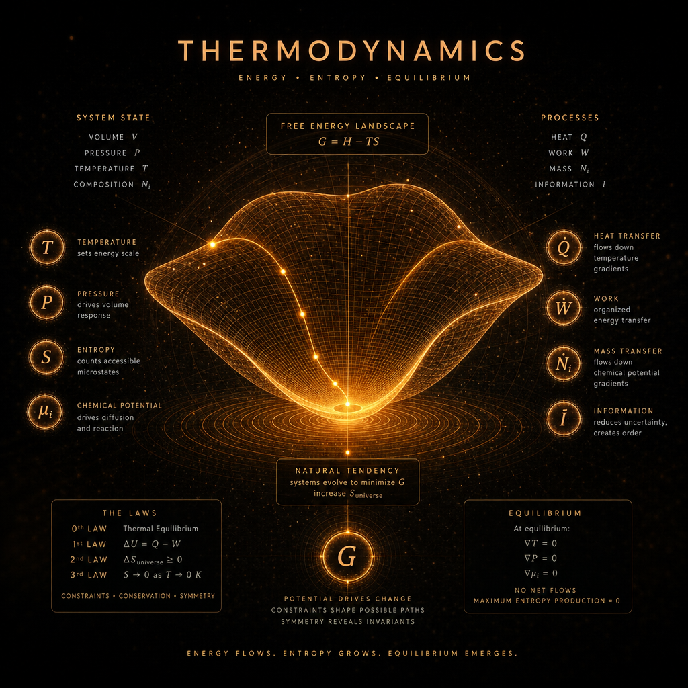

Constraint Grammar • Entropy • Free Energy

Thermodynamics is the constraint‑first substrate grammar where temperature acts as a substrate force, entropy defines regime boundaries, free energy governs coherence, flows follow gradients, and equilibrium appears as a fixed‑point structure embedded in larger statistical, field‑theoretic, and cosmological regimes.
In TriadicFrameworks, Thermodynamics is treated as a constraint geometry, not a mechanical theory. It defines: